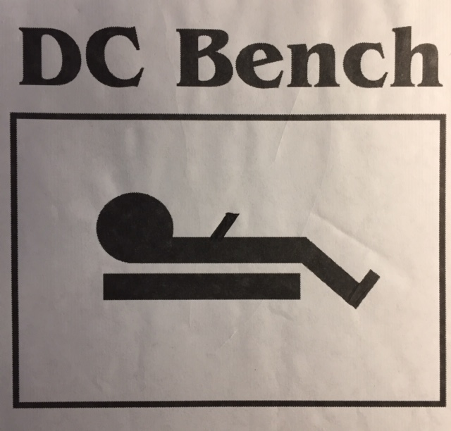

Here is where some type of story why you wanted to create the DC bench and what got you to this point
something like This
The DCB was inspired by their daughter, Jenna, who is physically
challenged and uses a wheelchair. The idea for the DCB came about
entirely by necessity. The Fernandezes encountered obstacles while on
outings with her. While visiting restaurants, movies, shows, etc with Jenna,
there weren’t any facilities to meet her bathroom needs. They felt Jenna
should have the dignity to use the bathroom facilities, just as everyone
else. And thus, the DCB was created.